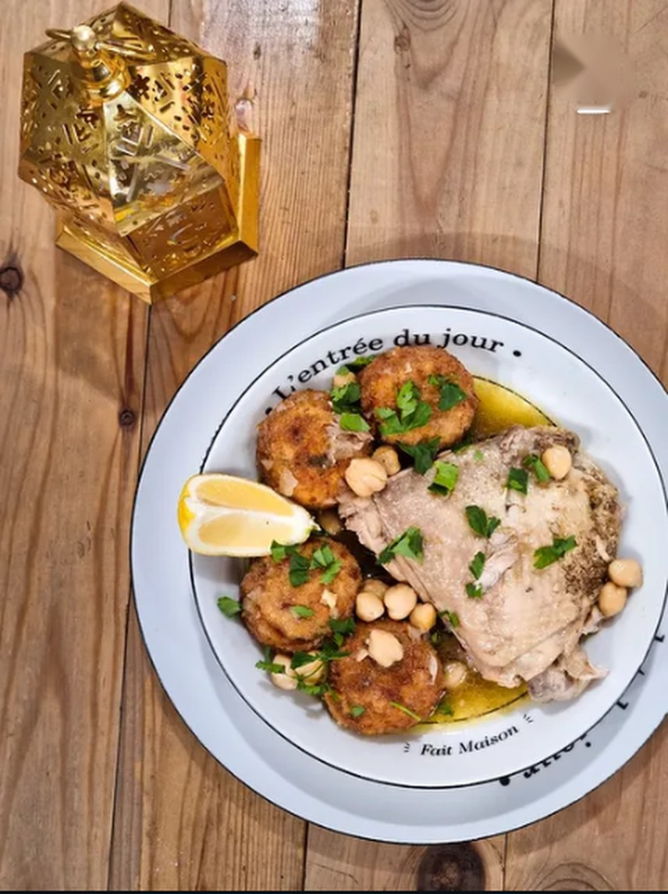
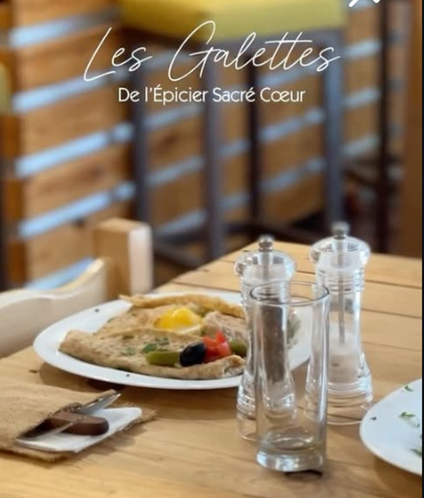
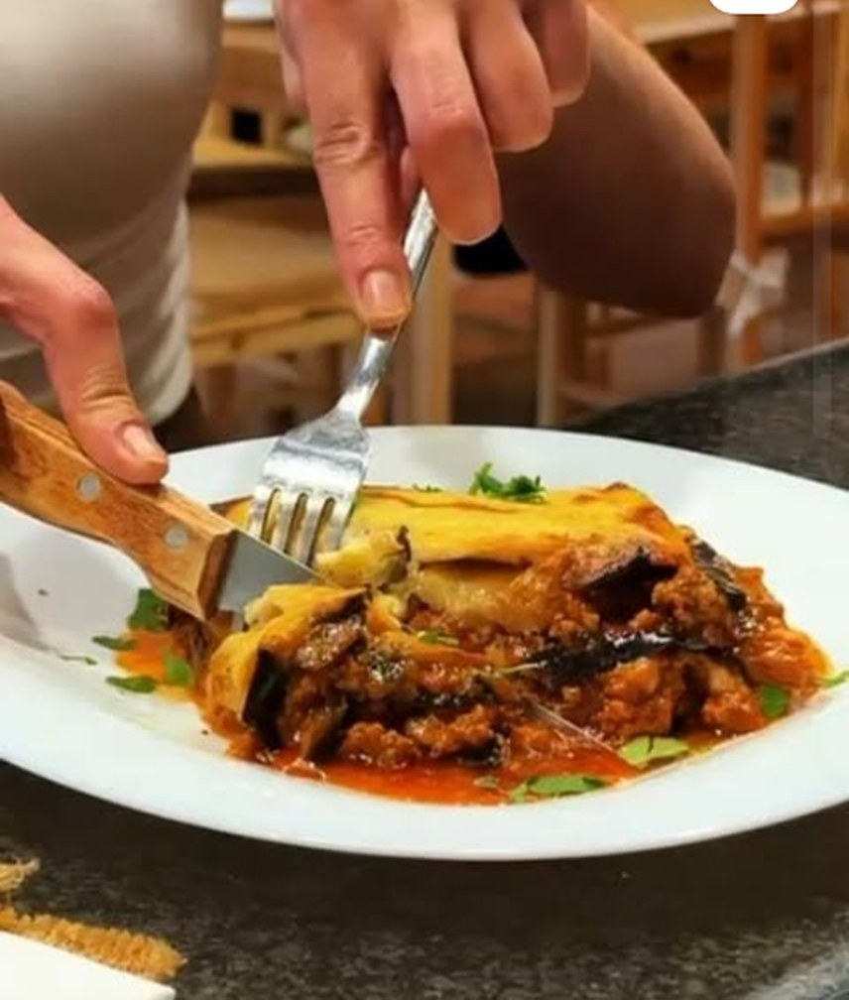
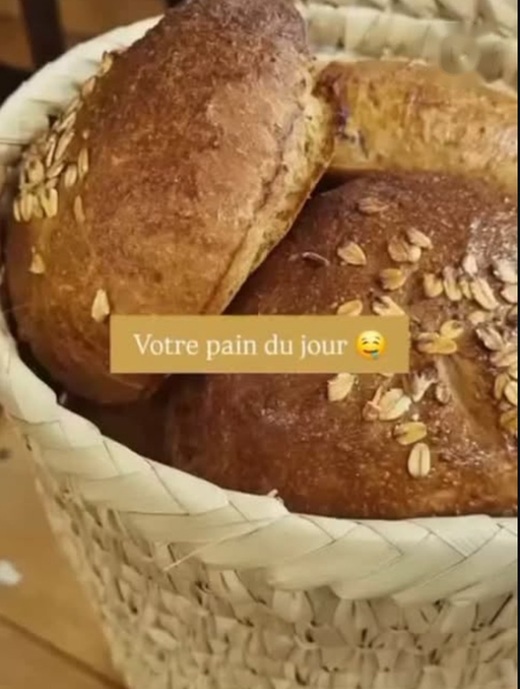
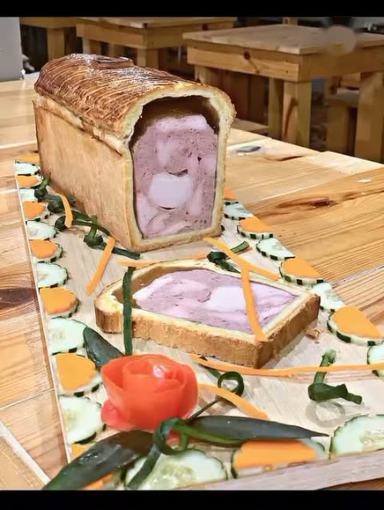
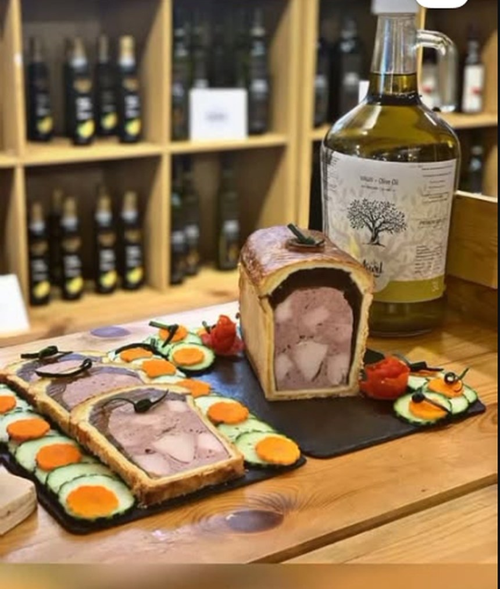

La cuisine
Recettes traditionnelles, gestes créatifs, produits choisis. La carte change selon les jours ; les nouveautés sont annoncées sur Instagram.

Fait maisonEntrée du jour
Croquettes, pois chiches et citron, servis dans l'assiette « fait maison ».

SignatureLes galettes
Galettes de l'Épicier, garnies à la commande.

PlatPlat du jour
Plats mijotés du jour, servis à table dans le salon.
Les plats à partager
Photos d'illustration : à remplacer par le shooting des plats du salon.
 Tradition
TraditionCouscous
Semoule fine, légumes du marché et sauce tomate épicée.
 Plat
PlatPoulet rôti et semoule
Volaille dorée, légumes croquants.
 Plat
PlatMijotés du jour
Plats de cuisine ménagère, servis chauds.
Pains & charcuteries
Une série dédiée aux pains, et une vitrine de terrines et pâtés en croûte.

BoulangerieLe pain du jour
Pain complet aux flocons, présenté dans son panier.

CharcuterieTerrine en croûte
Tranchée à la demande, servie avec crudités.

CharcuteriePlateau charcuterie
Terrines et pâtés à emporter ou à partager.
Envie de manger sur place ou d'emporter ?
Appelez-nous pour réserver une table ou commander.